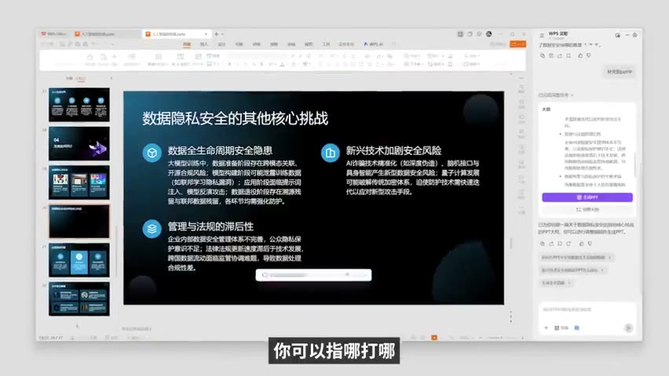

原视频 · 在线回看
点击后联网加载 B 站播放器；本地不下载整段视频。

原视频 · 在线回看
点击后联网加载 B 站播放器；本地不下载整段视频。
来源：第一个符合国人体质的办公 Agent 用起来咋样：不逼用户学AI，反教AI用产品。
UP 主：Topbook · 时长：5 分 58 秒 · 阅读强度：深度
你已经有了一份文档，样式也调整好了，现在只想补几项资料、删掉一段内容。把全文复制到聊天框里请 AI 重写，看起来很方便，但拿到回答后，你还得找回原来的位置，把文字放进去，重新处理格式。真正让人觉得省事的助手，需要理解我们正在使用的文档，也能直接在这个文档里完成修改。
WPS 灵犀这个办公助手的产品思路，就可以从这种小事开始理解。人继续在文档、演示文稿和表格里工作，用日常语言提出要求，AI 调用软件已有的能力处理对象。下面围绕 2025 年产品介绍中的几个具体场景，看看这种合作怎样发生，以及哪些判断仍然需要由人提供。
从现有文件开始，与从空白页面开始，是两种不同的任务。现有文档里已经有结构、标题、段落样式，也可能有经过多次修改才确定的措辞。用户说“补充这一项”，通常希望其他部分继续保留。助手如果每次都大范围重写，即使新文字很流畅，也会增加重新检查和整理的工作。
合同与论文的例子里，操作从提供信息开始：把需要补充的材料交给助手，让它填到文档中，再继续提出增删要求。已有参考文件或链接时，也可以一并提供。这里值得注意的是，修改发生在原有文档的环境里，用户能够继续查看和调整同一个对象。
样式保持尤其重要。办公文件往往承担沟通作用，标题层级、段落和格式共同告诉读者怎样阅读。内容改动完成后，如果原来清楚的结构被打乱，人还要花时间重新修复。能够把改动限制在需要的位置，保留其他部分，才比较接近我们实际想要的帮助。
从零生成文档时，助手还提供不同文书类型和相应格式，例如公告、规定或办法。格式让文件更容易进入熟悉的使用场景，但格式是否规范和内容是否正确，需要分别判断。一份看起来正式的文件，并不会因为排版整齐就自动满足具体事项的要求。
同样是“帮我改简历”，可以只要求句子更漂亮，也可以先给出明确的表达方向。Topbook 提出的思路，是把能力、使用的工具以及满足的需求联系起来。他用“个人价值等于能力乘以工具乘以市场需求”概括这种关系；这是帮助思考的表达方式，没有可以直接代入计算的统一数值。
为什么要这样联系？一份简历如果只罗列“会写作、会分析、会使用某种软件”，阅读者还需要自己推想：这些能力曾经用于什么事情，解决过什么问题？把真实经历放回具体需求里，能力就更容易被理解。使用了什么方法、面对什么任务、得到什么结果，彼此之间需要接得上。
于是，人与 AI 的分工变得清楚了。人提供真实经历，并决定想让对方理解哪一部分价值；AI 按照这个方向组织语言，再根据反馈继续修改。人可以指出某句话强调错了对象、遗漏了条件，或者把自己参与的部分写得过大。每轮对话都在帮助文稿更接近真实、明确的表达。
这里的“多轮协作”因此有很具体的含义。第一轮先得到可以讨论的稿子，后面几轮针对问题逐渐改善。我们需要看清每次改动有什么作用，不能只把“更专业”“更高级”当作永远有效的要求。内容方向越明确，越容易判断助手这次修改有没有帮助。
另一个场景从学习材料开始。面对一篇讲 AI 沟通技巧的文章，读者可能看到了所有句子，却仍不清楚某个建议怎样使用。把文章交给语音助手后，可以围绕具体不理解的地方继续问，让它换一种说法、联系文章里的例子解释，而不必每次重新交代正在读什么。
接下来还可以让助手反过来提问。听解释时，我们很容易觉得自己已经懂了；真正回答一个问题，需要把理解重新组织出来。回答遇到困难，就能更明确地知道哪里还没接上。这里的变化，是从接收解释走向主动表达，语音只是让这个来回更方便的一种方式。
如果使用者是教师，这段学习对话还能继续变成可分发的材料。先生成题目，再回到电脑上的文档环境，删掉不适合试卷的对话内容，安排题目顺序，给选择题和问答题留出作答位置。完成这些调整后，文件才接近一份可以打印、交给学生使用的试卷。
还可以让助手填写一份答案，供教师检查和修改后作为参考。自动生成题目、排成试卷、形成参考答案，各自解决不同问题。题目是否符合教学目标，答案是否准确、是否容许其他合理回答，仍然需要具体判断。能快速得到一份完整文件，为检查和完善提供了起点。
制作演示文稿是这类产品最吸引人的功能之一。我们输入课文标题，系统很快就能给出一套页面，似乎已经完成备课。但课件的内容安排会直接影响学生怎样理解文章；只有标题，助手很难知道老师想从什么问题开始，学生已经知道什么，又容易卡在哪里。
以《从百草园到三味书屋》为例，Topbook 提出一种教学切入思路：从鲁迅课桌上的“早”字开始，引出他的家境、父亲病情等背景，再进入课文。这里使用的是课堂导入的设想。老师先构建一个学生可以进入的情境，再决定后面的讲述怎样接上，而不只是把课文拆成若干页文字。
一旦教学思路明确，AI 就有了可以合作的具体对象。老师可以把开场方式、想讨论的问题和需要解释的关系交给助手，让它形成初稿；随后查看每一页，调整展开顺序、文字和配图。AI 也可以提出其他角度，老师再判断这些角度是否适合自己的课堂。对话围绕教学内容推进，课件随之逐渐成形。
| 人在决定什么 | 助手能够帮助做什么 |
|---|---|
| 学生需要理解哪一个问题 | 按照目标组织课件初稿 |
| 用什么情境引入课文 | 展开切入方式，提供可讨论的安排 |
| 某一页哪里不合适 | 修改对应文字、主题或配图 |
| 最终怎样向学生讲述 | 保留可继续编辑的演示文件 |
这也解释了为什么局部修改重要。一套页面里，可能只有主题不合适，或者某一张图没有帮助理解。我们希望直接指出那个对象，继续修改，而不必再次生成整份文件。工作越接近完成，越需要这种精确的小范围调整。
得到可以继续编辑的文件，也是这个场景的基本要求。网页预览能让我们看到外观，办公演示文件则要进入后面的修改、分享和放映过程。对于已经习惯使用演示软件的人，把结果留在熟悉的文件中，能减少生成之后的额外搬运。这是产品介绍强调原生演示文稿格式的原因。
除了整份文件，协作范围还可以更大或更小。范围变大时，文件夹中的多份材料可以作为一个主题来讨论，形成可问答的知识库。我们不再只问单篇文档写了什么，也能围绕一组已有资料连续提问。资料范围因此需要明确：助手应当围绕哪些文件回答，人又能怎样回到文件查看具体内容。
处理表格时，需求则更接近已有办公操作：调整格式、填充数据、生成计算公式，再用图表呈现结果。自然语言为这些操作增加了一种表达方式。图表是否有帮助，仍取决于我们想比较什么；公式是否合适，仍取决于数据的含义和计算目标。这些工作里的判断与文件内容紧密相关，不能仅凭结果整齐就省掉。
范围更小的协作，是写作时补出下一句话。AI 根据当前内容提出续写，人可以接受、取消或查看其他可能。画面里，已经写出的文字与灰色建议同时出现，用户可以决定接下来采用多少。对于已经知道自己要表达什么的人，这种帮助比反复请求整篇重写更贴近当前节奏。
从补一句话到处理一个文件夹，合作的尺度并不固定。关键是当前对象明确，人能够表达具体意图，并看见助手怎样改变对象。原有知识、表达能力与教学经验仍然在发挥作用，软件帮助我们更快把这些能力用到文件中。
办公助手的价值，可以从实际文件是否更容易完成来看。修改已有文档时，需要保留不该改变的部分；制作课件时，需要围绕教学思路逐页打磨；形成试卷时，需要把对话内容转成学生能直接使用的材料。
多轮对话让人把自己的判断逐渐写进结果。人提供真实材料与方向，助手帮助组织和修改，人再检查具体变化。任务越明确，越容易知道一次修改是否有效。
协作不必每次覆盖整个文件。改一个对象、补一句话、围绕一份资料解释，都可能比大范围生成更合适。好的操作方式，应当跟随我们正在处理的任务。
你已经有一份排好版的文档，只想修改其中一段。助手需要保留哪些东西，才能真正减少你的工作？
同样制作《从百草园到三味书屋》的课件，只有课文标题与已经给出教学切入思路，会给助手带来什么不同的信息？
围绕文章问答、生成题目、排成试卷和形成参考答案，各自解决什么问题？你会在哪些位置加入自己的判断？